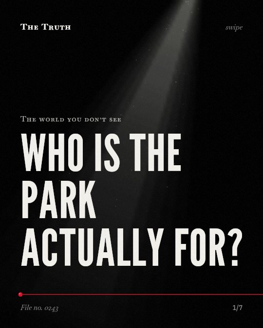

The world you don’t see
Who is the park actually for?

Safety and surveillance dictate where children play.
The priority for children's hang-out spots around schools is determined more by safety and surveillance than by access to nature.
Established. Several studies combined, or official data. The evidence is mixed.
What the research found
The priority of children's hang-out spots around schools is determined more by safety and surveillance than by access to green spaces or natural elements.
“Observations indicate that children's hang-out spots around schools are determined more by safety and surveillance than access to green spaces or natural elements.”
Study, 2023. Rastgo et al., Children s Geographies.
Ixodes ricinus ticks occur in urban green space in Europe and harbour multiple pathogens linked to both human and animal diseases.
“Ixodes ricinus ticks occur in urban green space in Europe and that they harbour multiple pathogens linked to both human and animal diseases.”
Review, 2022. Hansford et al., Zoonoses and Public Health.
Green space infrastructure is linked to cooling the urban boundary-layer climate by increasing surface roughness and improving convection efficiency rather than evaporation.
“Contribution to cooling at the scale of the urban boundary-layer climate is attributed mainly to greenspace increasing surface roughness and thereby improving convection efficiency rather than evaporation.”
Meta-analysis, 2017. Gunawardena et al., The Science of The Total Environment.
Urban green space is linked to positive associations with health, wellbeing, social and environmental outcomes.
“the trajectory of evidence is generally towards a positive association between UGS and health, wellbeing, social and environmental outcomes”
Review, 2019. Hunter et al., Environment International.
Urban green and blue spaces have the potential to improve public health and wellbeing, address health inequities, and provide co-benefits for the environment, economy, and society.
“Urban green and blue spaces (UGBS) have the potential to improve public health and wellbeing, address health inequities, and provide co-benefits for the environment, economy, and society.”
Review, 2023. Hunter et al., The Lancet Public Health.
Green spaces serve multiple functions.
Urban green spaces are linked to cooling the climate and improving public health. However, their use by certain populations is heavily influenced by safety factors.
The design of nature is not neutral.
That may be why you feel managed in public parks. The space is curated for oversight first, and well-being second.
This part is our reading of the evidence, not a finding.
A playground with high fences.
You see a park near a school. It has grass and trees, but the layout feels open to cameras and clear sightlines for guards. You feel watched while you sit on the bench. You notice the path is wide enough for easy monitoring. The trees are there, but the surveillance is the primary architect of the space you occupy. No one is actually looking at the leaves. They are looking at you.
The honest summary
The evidence shows that urban green spaces provide diverse ecological and health benefits, but their practical use by certain populations is heavily influenced by surveillance and safety factors.
The sources do not provide specific data on the integration of sensor arrays into urban forestry for behavioral monitoring.
Who is the park designed for?
Sources
- Kanchane Gunawardena, M.J. Wells, Tristan Kershaw (2017). Utilising green and bluespace to mitigate urban heat island intensity. The Science of The Total Environment. Meta-analysis, cited 1,465 times.
- R.F. Hunter, Claire Cleland, A. Cleary et al. (2019). Environmental, health, wellbeing, social and equity effects of urban green space interventions: A meta-narrative evidence synthesis. Environment International. Review, cited 557 times.
- Ruth Fiona Hunter, Mark J Nieuwenhuijsen, Carlo Fabian et al. (2023). Advancing urban green and blue space contributions to public health. The Lancet Public Health. Review, cited 157 times.
- Kayleigh M. Hansford, Benedict W. Wheeler, Barbara Tschirren et al. (2022). Questing Ixodes ricinus ticks and Borrelia spp. in urban green space across Europe: A review. Zoonoses and Public Health. Review, cited 85 times.
- Parna Rastgo, Arlinda Hajzeri, Ehsan Ahmadi (2023). Exploring the opportunities and constraints of urban small green spaces: an investigation of affordances. Children s Geographies. Study, cited 15 times.
Also read for this file, not quoted
- Devarajan et al. (2019). Built environment for physical activity—An urban barometer, surveillance, and monitoring.
This file was researched and drafted by software, then checked by rules a model cannot talk its way around: each quote above was matched word for word against the paper, and every number had to appear in it. How files are made.